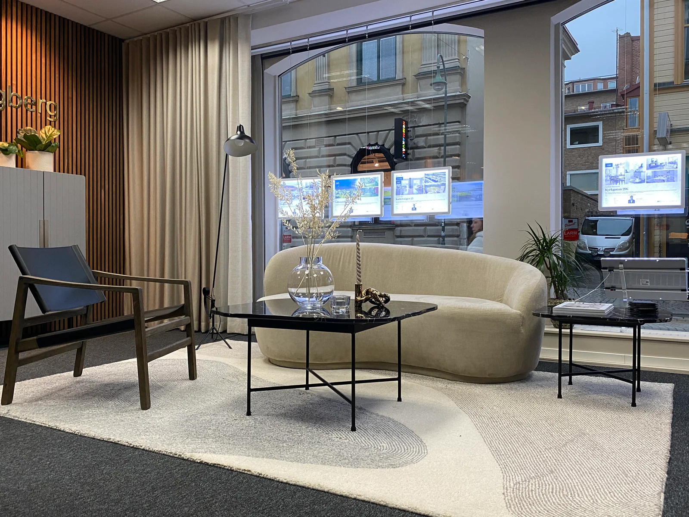
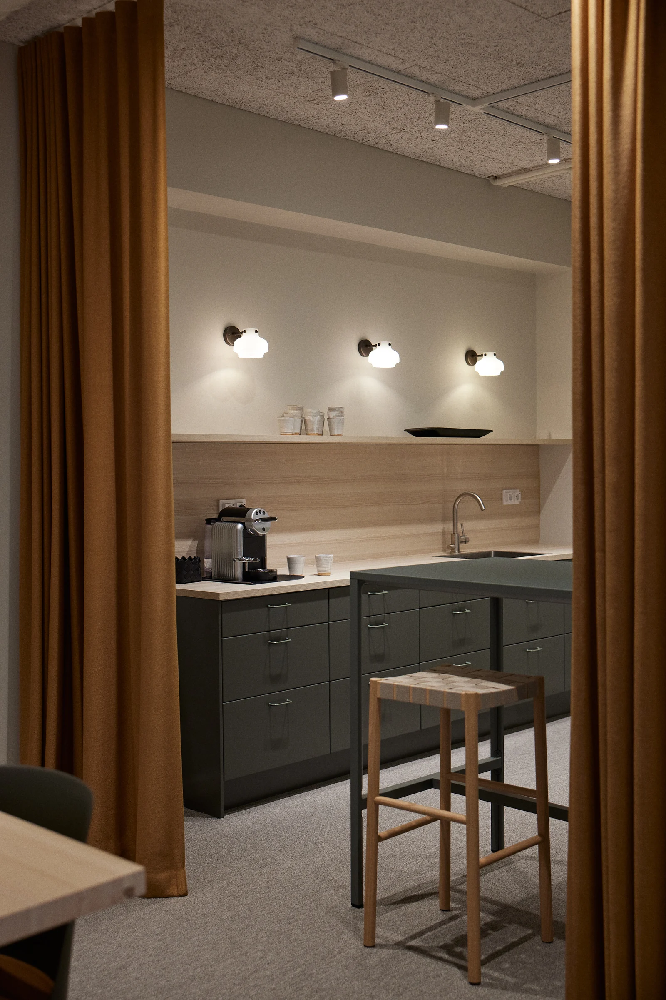
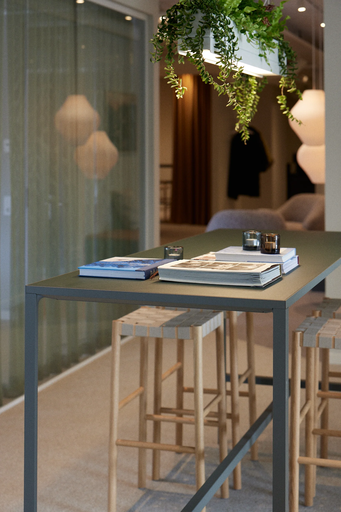
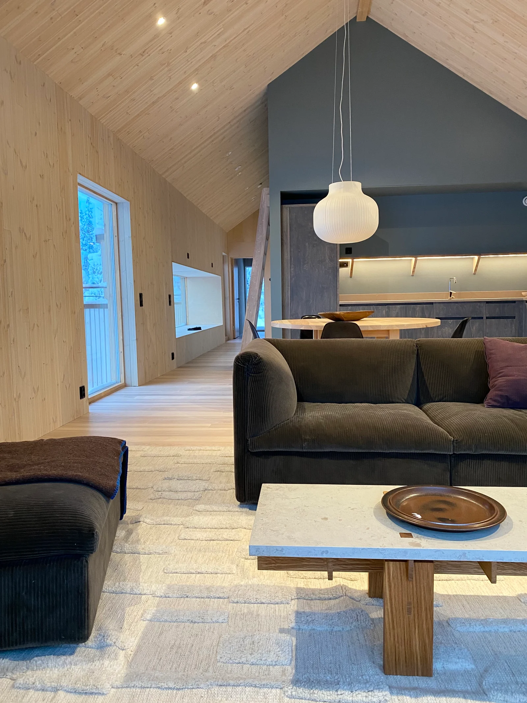
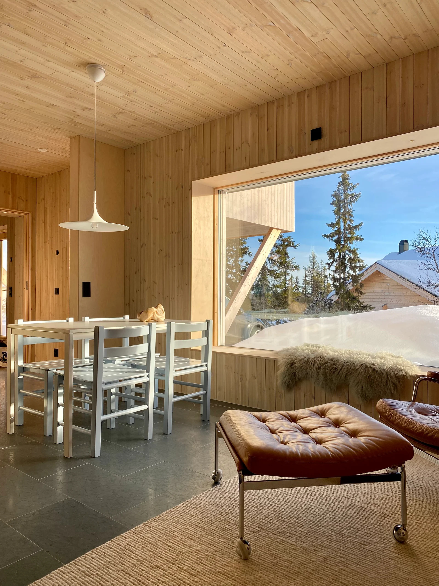
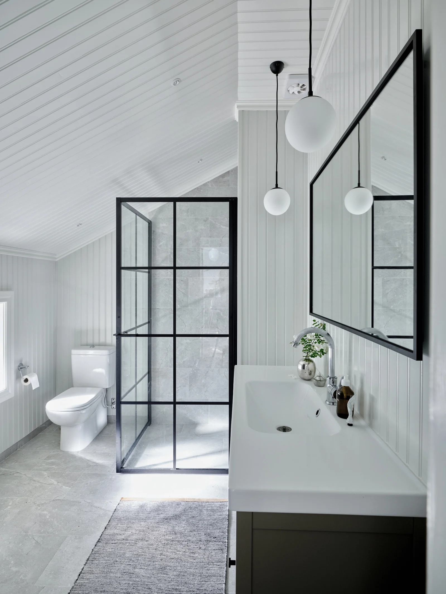
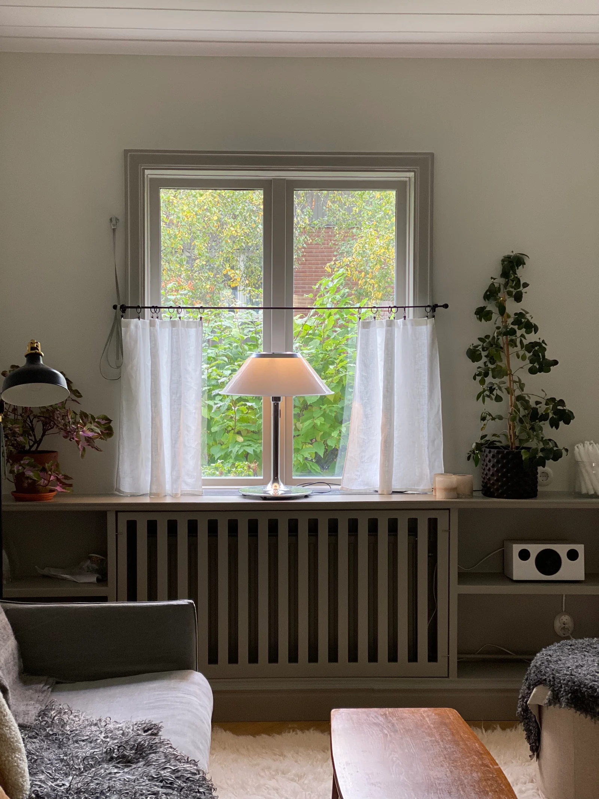
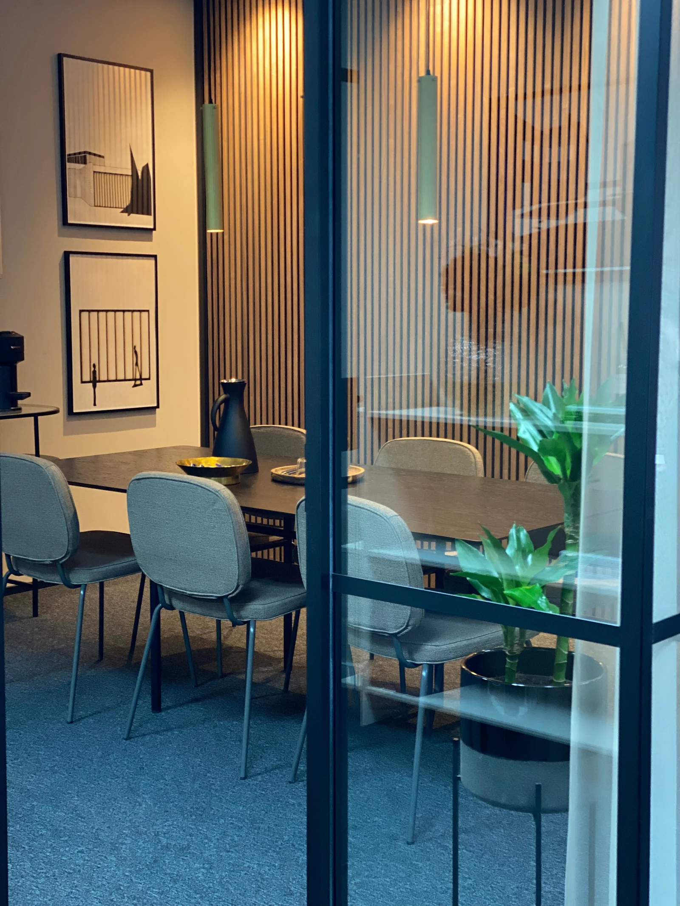
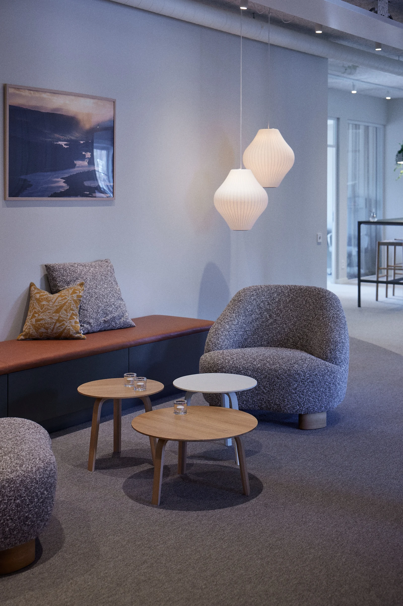

Interiör/Koncept
Miljöer som känns.
Vi skapar miljöer där människor vill vara. Från små lounger, caféer och barer till kontor, butiker, hotell och privata hem. Vi arbetar med helheten, från konceptutveckling till leverans av färdig möblering.

Ett urval av våra arbeten.
Välj en bild för att se den i sin helhet.







